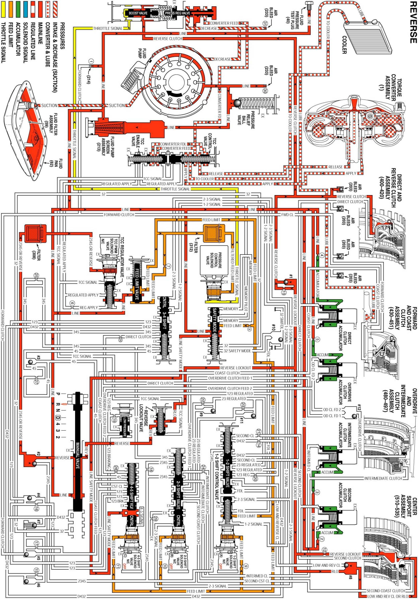
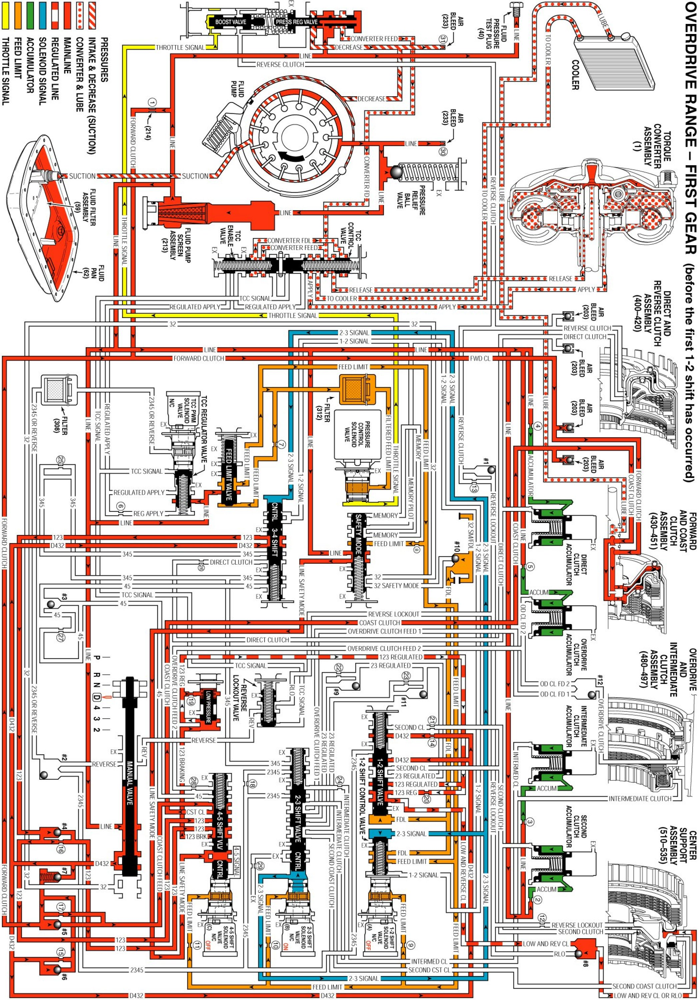
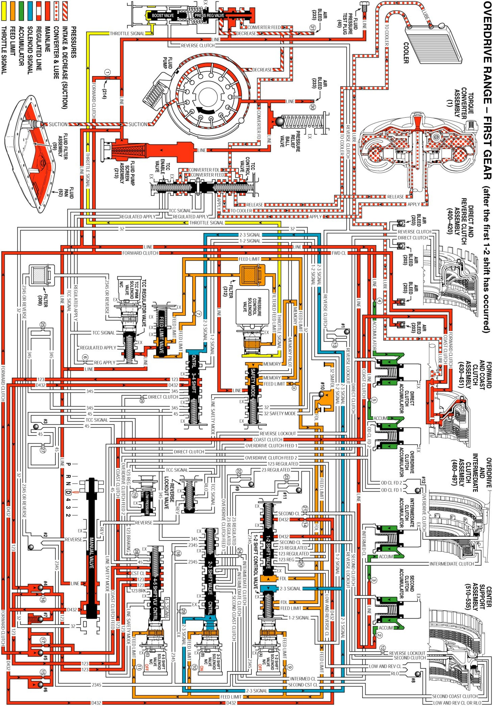
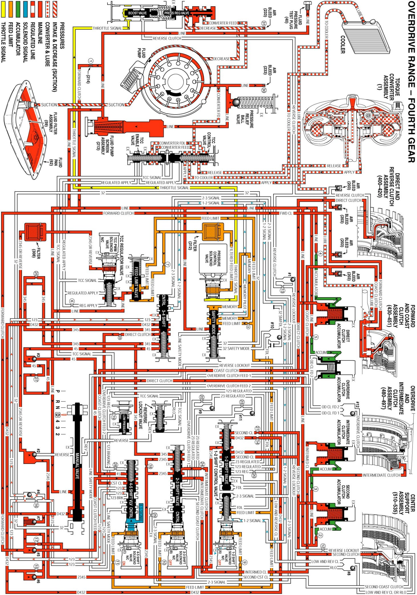
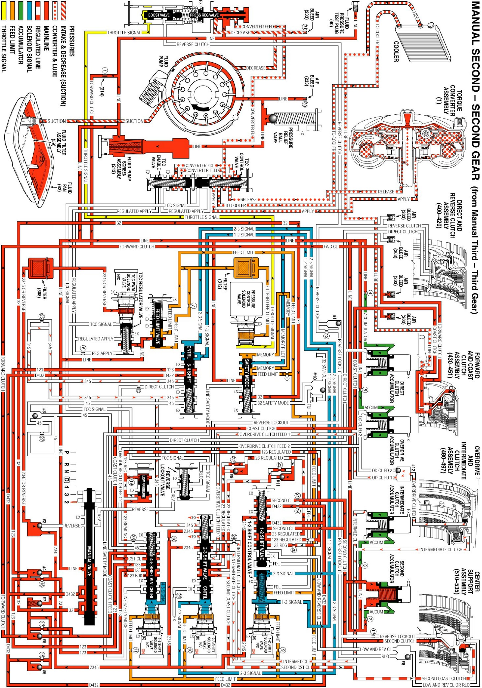
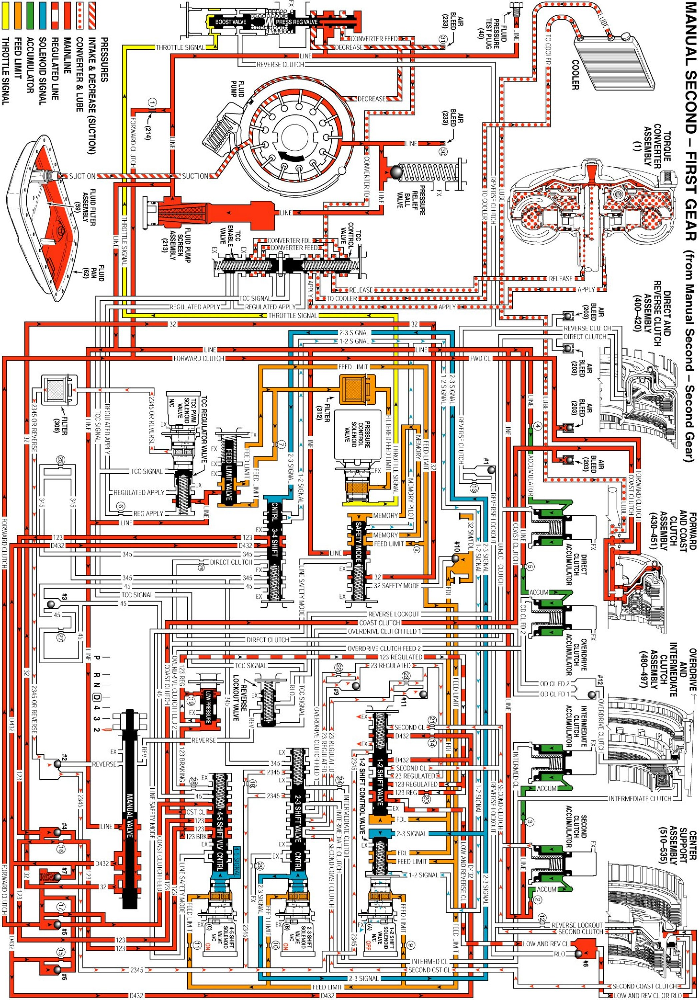

5L40-E/5L50- E Automatic Transmission
Park Engine Running
Park Engine Running:

Reverse
Reverse:

Neutral Engine Running
Neutral Engine Running:

Overdrive Range, First Gear
Overdrive Range, First Gear (Before First 1-2 Shift):

Overdrive Range, First Gear
Overdrive Range, First Gear (After First 1-2 Shift):

Overdrive Range, Second Gear
Overdrive Range, Second Gear:

Overdrive Range, Third Gear - Torque Converter Clutch (TCC) Applied
Overdrive Range, Third Gear - Torque Converter Clutch (TCC) Applied:

Overdrive Range, Fourth Gear - Torque Converter Clutch (TCC) Applied
Overdrive Range, Fourth Gear - Torque Converter Clutch (TCC) Applied:

Overdrive Range, Fifth Gear - Torque Converter Clutch (TCC) Released
Overdrive Range, Fifth Gear - Torque Converter Clutch (TCC) Released:

Manual Fourth
Manual Fourth:
Manual Third
Manual Third:

Manual Second Gear
Manual Second Gear:

Manual Second - First Gear
Manual Second - First Gear:
